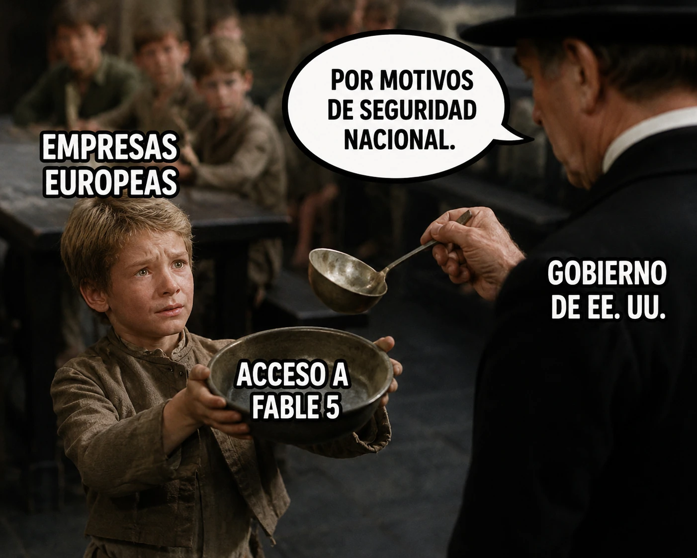

estrategIA #142 ·
Pedir acceso desde Europa
El contexto
El personaje que pide otra ración recuerda a Oliver Twist. En el meme, las empresas europeas piden acceso a Fable 5, el modelo de IA de Anthropic. La edición contaba la suspensión de ese acceso por una orden estadounidense y planteaba qué supone depender de decisiones tomadas en otro país.
Publicado en: estrategIA #142 — Claude Fable 5: hablamos con la IA que Washington mandó desconectar
Leer el texto de la imagen
EMPRESAS EUROPEAS ACCESO A FABLE 5 GOBIERNO DE EE. UU. POR MOTIVOS DE SEGURIDAD NACIONAL.